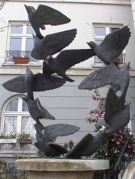
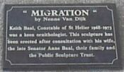
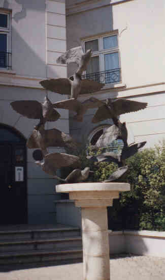

Migration


"Migration"
by Nenne Van Dijk
Keith Baal, Constable of St. Helier 1968-1973
was a keen ornithologist. This sculpture has
been erected after consultation with his wife,
the late Senator Anne Baal, their family and
the Public Sculpture Trust.

R'tou ès Statues | Back to Statues
R'tou à la page d'siez-mé | Back to home page